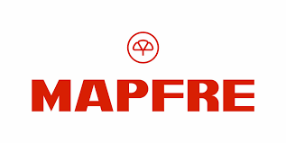
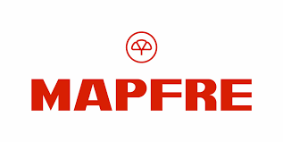
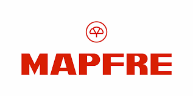

Compañias
Trabajamos con las compañías número uno del mercado asegurador brindando la mejor atención para su tranquilidad.
 

Trabajamos con las compañías número uno del mercado asegurador brindando la mejor atención para su tranquilidad.

Allianz Argentina comenzó en 1988 con la adquisición de tres empresas de larga trayectoria en el mercado local: Plus Ultra Compañía Argentina de Seguros S.A., Colón Compañía de Seguros Generales S.A. y Compañía Aseguradora Argentina de Seguros Generales S.A., formando así Allianz RAS Argentina S.A. de Seguros Generales. En 1997 Allianz compró AGF, en lo que fue la mayor adquisición de su historia hasta el momento, un grupo asegurador de origen francés que había arribado al país unos años antes. Finalmente, en 2007 Allianz adquiere AGF a nivel mundial, y la compañía adopta su actual razón social: Allianz Argentina S.A., reuniendo así el know how de más de un siglo de experiencia en nuestro país y con el liderazgo y la innovación de uno de los grupos financieros globales más importantes del mundo.
En el año 1923 abría sus puertas FEDERACIÓN PATRONAL C.S.L. iniciando sus actividades con un objetivo concreto: brindar cobertura al personal obrero de las empresas que administraban sus fundadores. Así, un grupo de industriales y empresarios de la ciudad de La Plata, en una conjunción de voluntades, conformaron una organización económico-social en procura de un equilibrio armónico en el costo del seguro. Con el transcurso de los años, la institución se consolidó en la prestación de esta cobertura, y decide incursionar en los ramos Automotores, Incendio y Accidentes Personales, hasta brindar, con el tiempo, todas las posibilidades de cobertura, como la de Riesgos del Trabajo (Ley 24557) e incluso Vida en todas sus alternativas. A partir del año 2000, se crea Federación Patronal Seguros S.A.
Mercantil andina es una de las primeras compañías de seguros de la Argentina. En 1923 nace en Mendoza un 9 de Noviembre con el objetivo de proteger el patrimonio tanto de personas como de empresas. En 1958 abre las oficinas comerciales en Buenos Aires. en 1978 la empresa operaba en cuatro provincias argentinas. Y en 2022, enontramos 43 oficinas propias en 14 provincias argentinas. Somos una comunidad integrada por colaboradores, productores y asegurados. Nuestros colaboradores están altamente capacitados y con el objetivo de estar más cerca y de manera más eficiente, brindando todo el respaldo del conocimiento a nuestro equipo de productores.
Desde 1921 Victoria Seguros cumple con un importante papel en el mercado de seguros. Manteniendo una reconocida trayectoria de seriedad y eficiencia la cual, en 1977, se vio ampliamente fortalecida cuando el Grupo Bagó adquirió la totalidad del paquete accionario. 100 años en el mercado hacen de VICTORIA SEGUROS una empresa sólida y responsable. Una empresa que comprende las necesidades del asegurado, con capacidad de respuesta y dinamismo. Una empresa que conoce muy bien el camino al liderazgo y que apuesta a estrategias claras y precisas. Con un management eficiente y experimentado, una tecnología moderna y un fuerte respaldo.
Meridional Seguros nació en 1948. En un comienzo nos orientamos a la comercialización de pólizas en el segmento corporativo y años más tarde extendimos nuestro portafolio de productos a audiencias masivas, con líneas para individuos, como Autos, Accidentes Personales y Hogar, entre otras. En los años 80 comenzamos la expansión geográfica a las principales ciudades del interior. Actualmente contamos con una red de centros de servicios a través de los cuales brindamos atención a nuestros socios y asegurados en todo el país. Cada día trabajamos junto a una importante red de productores, brokers y socios estratégicos para ofrecer las más completas coberturas que aseguran el bienestar y el patrimonio de personas y empresas. Meridional Seguros se destaca en el mercado argentino gracias a su amplio e innovador abanico de productos y el profesionalismo de su equipo de trabajo.
En agosto de 1933 tuvo lugar el nacimiento de la que hoy es la primera Compañía de Seguros de España y de Latinoamérica: la Mutual de la Agrupación de Propietarios de Fincas Rústicas de España (MAPFRE). Una cooperativa de propietarios agrícolas fue quien fundó la aseguradora en previsión contra accidentes de trabajo, la cual, desarrolló nuevas áreas y filiales en España hasta convertirse en la Corporación que, en la década del 80, decidió expandirse a otros continentes y así acrecentar su respaldo y el prestigio mundial que hoy ostenta como Compañía de Seguros. Particularmente en Argentina, MAPFRE se establece y comienza sus operaciones en 1986, al adquirir Aconcagua Compañía de Seguros. Desde aquel momento, el crecimiento sostenido de MAPFRE ARGENTINA posibilitó la consolidación de un destacado Holding con presencia en todo el país. En 2006 comenzó a cotizar en bolsa con el nombre MAPFRE S.A.